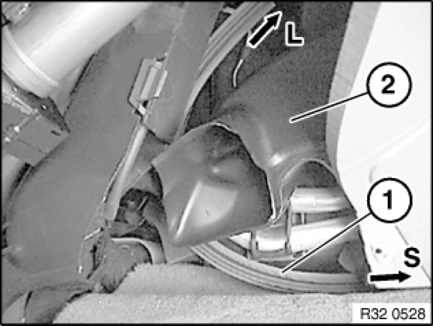

Procedures
32 32 170 - Removing and installing/replacing interlock cable

Necessary preliminary tasks:
- Remove function carrier 51 45 106 - Removing and installing/replacing function carrier on instrument panel trim on trim for instrument panel
- Remove lower section of steering column trim Removing and Installing/Replacing Lower Section of Steering Column Trim
After installation:
- Check function of interlock cable Adjustments.
- Adjust interlock cable Adjustments.
Release screw (1).
Take off holder (2).
Press interlock cable (3) in area of switch block to driver's side and remove towards front.
Turn guide sleeve (1) through approx. 45°.
Pull interlock cable (2) out of steering column.

Tie wire or cord to end of interlock cable (1) in area of switch block.
Pull out interlock cable (1) in direction of steering column.
Important!
Do not kink interlock cable (1).
If necessary, remove wire or cord from interlock cable (1).
Installation:
Check installation position of interlock cable (1) in area of footwell heating duct (2), correct if necessary.
L = steering column, S = switch block
Pull through interlock cable (1) in direction of switch block.

Replacement only:
Tie wire of cord to end of new interlock cable.